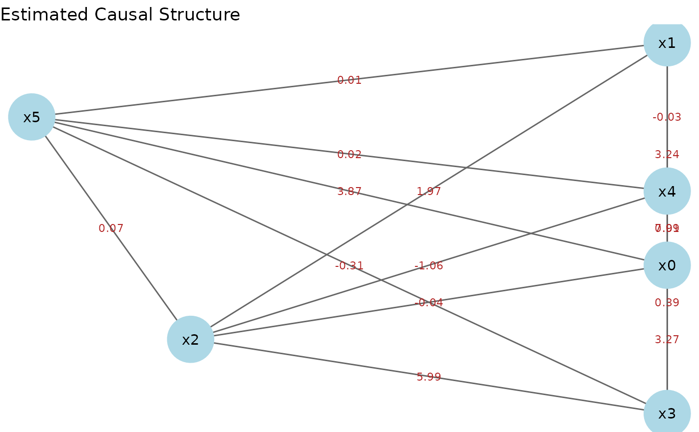

推定された因果構造を ggplot2 ベースの有向グラフとして描画する。ノード配置は
igraph の階層レイアウト (sugiyama) で計算し、因果の流れが概ね上から下へ並ぶ。
静的画像として出力されるため RMarkdown / Quarto で安定する。対話的な HTML
図が必要な場合は plot_adjacency()（DiagrammeR ベース）を使う。
Usage
# S3 method for class 'LingamResult'
autoplot(
object,
threshold = 0,
node_size = 16,
node_color = "lightblue",
label_edges = TRUE,
...
)Arguments
- object
lingam_direct()の返り値 (LingamResultオブジェクト)- threshold
この絶対値以下の係数はエッジとみなさない (default: 0)
- node_size
ノードの大きさ (default: 16)
- node_color
ノードの塗り色 (default: "lightblue")
- label_edges
エッジに係数ラベルを表示するか (default: TRUE)
- ...
未使用
Details
autoplot() は ggplot2 のジェネリックなので、利用前に library(ggplot2) で
ggplot2 を読み込む必要がある。描画には ggplot2 と igraph が必要。
Examples
# \donttest{
if (requireNamespace("ggplot2", quietly = TRUE) &&
requireNamespace("igraph", quietly = TRUE)) {
library(ggplot2)
dat <- generate_lingam_sample_6()
model <- lingam_direct(dat$data, reg_method = "ols")
autoplot(model)
}

# }